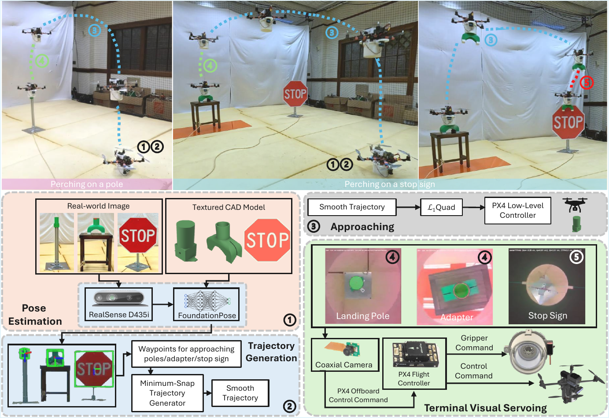
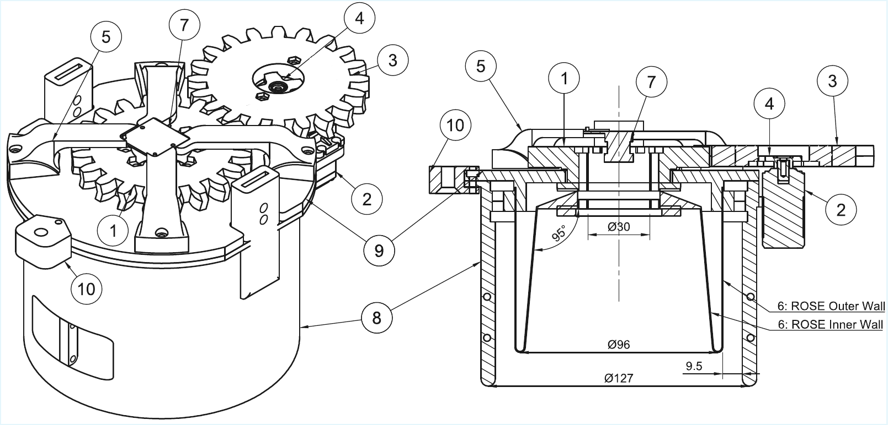
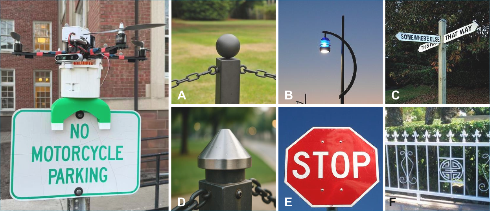
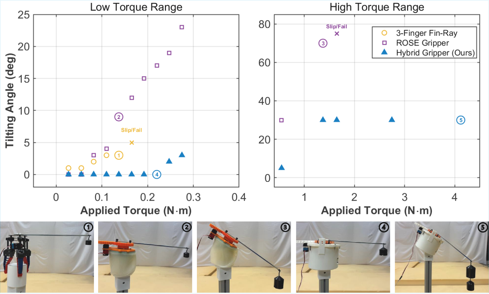
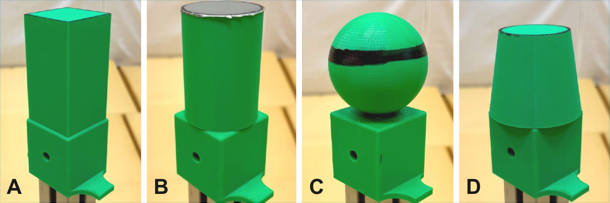
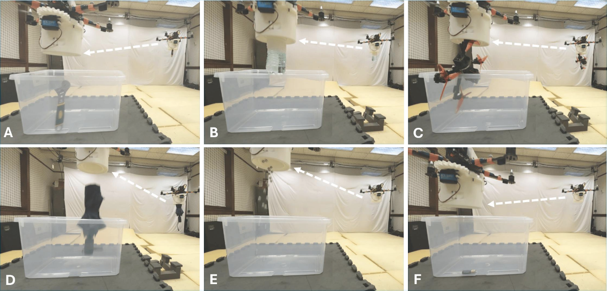

Mechanics
Decoupled Load Paths
A rigid exoskeleton carries perching loads while the ROSE membrane remains compliant for grasping.
Accepted to IEEE/RSJ IROS 2026

Aerial manipulation demands end-effectors that can support both grasping and perching. Existing designs often split between compliant grippers that adapt to objects but lack perching stiffness, and stiff perching mechanisms that are tied to narrow target geometries. We present a hybrid aerial manipulation system that decouples the anchoring load path from a compliant grasping interface, allowing manipulable objects to serve as anchoring interfaces for urban perching.
The system embeds a coaxial eye-in-hand camera for zero-parallax terminal alignment and uses an L1 adaptive controller for robust flight under aerodynamic and payload disturbances. Experiments demonstrate grasping of everyday objects, perching on diverse pole geometries, and stop-sign perching through a graspable adapter.
A rigid exoskeleton carries perching loads while the ROSE membrane remains compliant for grasping.
An embedded downward camera aligns sensing with the gripper axis through terminal contact.
The robot grasps an adapter, transports it, and uses it to perch on a thin stop-sign edge.
Autonomous terminal alignment and perching on pole-head targets.
Transport-and-release with everyday payloads of varied shape and mass.
Two-stage adapter grasping followed by perching on a thin sign edge.





@misc{han2026grasping,
title = {Grasping as Anchoring: Expanding Urban Perching with a Hybrid Gripper for Aerial Robots},
author = {Han, Ziyin and Mo, Bihao and Cheng, Sheng and Wang, Rong and Wang, Ziyi and Gao, Junjie and Pham, Hung Tien and Ho, Van Anh and Hovakimyan, Naira},
year = {2026},
note = {Accepted to IEEE/RSJ IROS 2026}
}